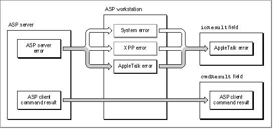

ASPUserCommand
TheASPUserCommandfunction sends a command that you define from the workstation to the server across a session between them. ASP does not interpret the command syntax or execute the command; it simply transfers the command to the ASP server.FUNCTION ASPUserCommand (thePBptr: XPPParmBlkPtr; async: Boolean): OSErr;
thePBptr- A pointer to an XPP parameter block.
async- A Boolean that specifies whether the function should be executed asynchronously or synchronously. Specify
TRUEfor asynchronous execution.
--> ioCompletion ProcPtr A pointer to a completion routine. <-- ioResult OSErr The function result. <-- cmdResult LongInt The ASP command result. --> ioRefNum Integer The .XPP driver reference number. --> csCode Integer Always userCommand for this function. --> sessRefnum Integer The session reference number. --> aspTimeout Byte The retry interval in seconds. --> cbSize Integer The command block size. --> cbPtr Ptr A pointer to the command block. <-> rbSize Integer The reply buffer and reply size. --> rbPointer Ptr A pointer to the reply buffer. <-- ccbStart Array The beginning of memory for the CCB.
Field Description
cmdResult- The ASP command result, consisting of 4 bytes of data returned by the server. The ASP client application defines the contents of the command result field. For example, AFP defines this field to specify the result of the AFP command. This field is valid if no system-level error is returned in the
ioResultfield.sessRefnum- The reference number assigned to this session that the
ASPOpenSessionfunction returned when you called it to open
the session.aspTimeout- The time in seconds after which ASP is to retry to send the command across the session. You cannot specify the number of retries, just the time between them. ASP will retry to transmit the command until either it succeeds or the session is closed.
cbSize- The size in bytes of the buffer that contains the command that
ASP is to send to the sever. The command buffer size must not exceed the value ofaspMaxCmdSize, which theASPGetParmsfunction returns.cbPtr- A pointer to a buffer containing the command that ASP is to send
to the server.rbSize- On input, the size in bytes of the buffer that you allocated to contain the command reply that you expect to receive from the server. On return, the size in bytes of the reply data that was actually returned.
rbPointer- A pointer to the buffer for the command reply.
ccbStart- The beginning of the memory for the command control block (CCB) that the .XPP driver is to use. The memory allocated for the CCB must not exceed the maximum of 150 bytes for this function. The CCB is an array that is part of the .XPP parameter block.
DESCRIPTION
You use theASPUserCommandfunction to send a user command across an ASP session. You pass to theASPUserCommandfunction a pointer to a variable-size command block that contains the command data to be sent to the ASP server. The command data must adhere to a format defined by a higher-level protocol that is built on top of the ASP server, such as the AppleTalk Filing Protocol (AFP). The command data requests the server to perform a particular function and return a reply consisting of a variable-size block of data and a command result. Some examples of the types of commands that you can send areASP delivers the commands in the same sequence that you send them. ASP does not interpret the command data or in any way participate in executing the command's function. It simply conveys the command data, included in a higher-level format, to
- a request to open a particular file on a file server (The server would return a small amount of data for this request.)
- a request to read a range of bytes from a device (The server might send a multiple-
packet reply to this request.)
the server end of the session and returns the command reply to your ASP workstation application. The command reply consists of a 4-byte command result returned in thecmdResultfield and a variable-size command reply returned in the reply buffer that you supply. The higher-level protocol that is the client of ASP defines the content and use of the command result. A command result error is returned in thecmdResultfield. All other types of errors are returned in the function's parameter blockioResultfield. These error codes report the following error conditions:Figure 8-3 on page 8-18 shows how these errors are reported.
- system-level errors returned by the .XPP driver indicating, for example, that the driver is not open or that a particular system call is not supported
- .XPP driver errors indicating, for example, that the session is not open
- AppleTalk errors returned from the underlying AppleTalk protocols
- an ASP-specific error returned from an ASP server, for example, in response to a failed
ASPOpenSessionfunctionThe .XPP driver uses the memory at the end of the XPP parameter block defined as a
CCBStartarray as an internal command control block (CCB). To ensure that the function executes successfully, you can specify the maximum size for this array as indicated in particular for the function that uses it.You can minimize the amount of memory that is used for the CCB in the queue element. To do this, you should understand how ASP uses this memory. ASP uses the CCB to build data structures, including parameter blocks and buffer data structures (BDS), that it needs in order to make function calls to the .ATP driver. (See the chapter "AppleTalk Transaction Protocol [ATP]" in this book for information on ATP and buffer data structures.) The exact size of the memory that ASP needs for the CCB depends on the size of the replies that you expect from the server, and in the case of the
ASPUserWritefunction, the size of the data to be written. For theASPUserCommand,ASPUserWrite, andASPGetStatusfunctions, ASP must set up a BDS to hold the reply information.
The number of entries in the BDS that ASP creates is equal to the size of the reply buffer divided by 578 (the maximum number of data bytes per ATP response packet), rounded up. A BDS cannot exceed eight elements. In addition to a BDS, ASP uses the CCB memory for the queue element to call the .ATP driver.Figure 8-3 Error reporting in ASP

You can use the following equations to determine the minimum size of a CCB for a function that includes a reply buffer (
rbSize):bdsSize = MIN (((rbSize DIV 578) + 1),8) * bdsEntrySz ccbSize = ioQElSize + 4 + bdsSizeFor functions, such asASPUserWrite, ASP must create an additional BDS and queue element to use in sending the write data to the server. You can use the following equa-
tions to determine the minimum size of a CCB for anASPUserWritefunction; these equations take into account the reply buffer (rbSize) and write data size (wdSize):wrBDSSize = MIN (((wdSize DIV 578) + 1),8) * bdsEntrySz wrCCBSz = (2 * ioQElSize) + 4 + bdsSize + wrBDSSizeNote thatbdsEntrySzis equal to 12 andioQelSizeis equal to 50.SPECIAL CONSIDERATIONS
Note that you must provide the .XPP driver reference number as an input parameter
to this function. You can obtain the driver reference number by calling the Device Manager'sOpenDriverfunction.ASSEMBLY-LANGUAGE INFORMATION
To execute theASPUserCommandfunction from assembly language, call the_Controltrap macro with a value ofuserCommandin thecsCodefield of the parameter block. You must also specify the .XPP driver reference number. To execute the_Controltrap asynchronously, include the value,ASYNCin the operand field.RESULT CODES